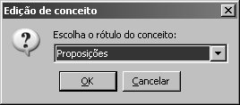
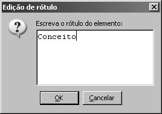

Na barra de menus, clique em “Arquivo”, e “Novo”, em seguida;
Na barra de tarefas, clique no botão  ;
;
No teclado, segure a tecla Ctrl e aperte N.
Ao contrário dos mapas livres de contexto, os mapas conceituais contextualizados dependem de uma ontologia para serem feitos.
Uma ontologia é uma relação de conceitos e relações, assim como os mapas conceituais, só que as relações contêm várias frases de ligação. São usadas, no CMTool, pelos professores, para que eles definam conceitos e frases de ligação e, a partir daí, as proposições que eles acham mais corretas. Os mapas conceituais que seus alunos farão conterão os conceitos definidos. As proposições dos mapas serão avaliadas comparando-as com as relações contidas na ontologia, por meio de um algoritmo genético, o GAADT-CM, contido no CMTool.
Estes mapas, portanto, são o motivo de o CMTool existir: a avaliação. Aqui serão descritos os passos para serem feitos mapas conceituais contextualizados.
Ao abrir o CMEditor, aparecerá a caixa de diálogo “Bem-vindo ao CMEditor”. Na lista de seleção, selecione a opção “Criar um mapa conceitual contextualizado”, clicando OK em seguida.
Se quiser criar um mapa conceitual livre de contexto com o CMEditor já em execução, você pode seguir uma das 3 alternativas:
Na barra de menus, clique em “Arquivo”, e “Novo”, em seguida;
Na barra de tarefas, clique no botão  ;
;
No teclado, segure a tecla Ctrl e aperte N.
Se você tiver feito alguma modificação no mapa conceitual em execução antes de você fazer uma das operações acima, surgirá o diálogo de “Salvar”. Saiba mais detalhes clicando aqui.
Após feita a operação de “Salvar”, surgirá a caixa de diálogo de “Novo mapa conceitual”. O mesmo ocorrerá se você não tiver feito modificações no mapa conceitual aberto anteriormente. Nessa caixa de diálogo, como descrito abaixo, clique em “Contextualizado”.
Após escolher o tipo do mapa, surgirá a caixa de diálogo de abertura de arquivo. Nela, você deverá procurar o local onde está salvo a ontologia que servirá como base para seu mapa conceitual. Peça a seu professor para que ele lhe oriente nesse passo.
Basta selecionar a ontologia e clicar em OK. Após você salvar seu mapa, você não precisará chamar a ontologia outra vez.
A primeira coisa a fazer é criar um conceito. Para isso, basta clicar duas vezes em um espaço em branco da área de desenho. Surgirá o diálogo de criação de conceitos.
Nesta caixa de diálogo, note que aparecerão 3 tipos de elementos a serem criados:
Conceito simples: Nas proposições, podem receber e enviar arcos. Possuem setas flutuantes, que são usadas para criar as proposições. Em mapas conceituais contextualizados, eles são pré-definidos na ontologia de onde o mapa vem.
Exemplos: Diferente dos conceitos, só podem receber arcos nas proposições. Portanto, não possuem setas flutuantes.
Legendas: Servem apenas para fazer anotações no mapa conceitual, que não fazem parte do mapa, mas que podem explicá-lo.
Para criar um conceito, você deverá proceder como na figura acima: selecionar o botão “Conceito”. Ao lado do botão, há uma lista de conceitos que, como já foi dito, são vindos da ontologia. Selecione um e clique em OK. Após criar um conceito, seu nome não surgirá mais na lista, só quando você excluir o conceito da área de desenho. A medida que você for criando seus conceitos, acontecerá de não sobrar mais nenhum, e você não poderá mais criar conceitos. Para voltar a poder criar conceitos, exclua conceitos existentes na área de desenho. Eles assim voltarão para a lista.
Para criar um exemplo ou uma legenda, você deverá selecionar o botão “Exemplo” ou “Legenda” e clicar em OK. Ao contrário dos conceitos você pode criar quantos exemplos e legendas quiser.
Agora você irá querer editar os elementos de um mapa conceitual livre de contexto. Para isso, basta usar o mouse, clicando duas vezes em cima do determinado elemento.
Como o conceito já recebe o rótulo ao ser criado, não se faz tão necessário editar seu rótulo. Mas, se você quiser trocá-lo, clique duas vezes em cima dele. Surgirá o diálogo abaixo.

Se você escolher um rótulo diferente do antigo e clicar em OK, o rótulo antigo volta para a lista de conceitos e o nosso conceito receberá o novo rótulo.
Já ao clicar duas vezes em cima de um exemplo ou de uma legenda, aparecerá uma caixa de diálogo com uma área de texto como a abaixo.

Você pode, então, digitar o novo rótulo e clicar em OK.
Para criar relacionamentos, você deve posicionar o cursor do mouse sobre um conceito. Surgirão duas setas flutuantes.

Cada uma corresponde a um tipo de processo cognitivo. O ícone indica diferenciação progressiva e o ícone, reconciliação integrativa. Saiba mais clicando aqui.
Posicione o mouse sobre uma das setas. Clique e segure o botão do mouse. Arrastando a seta, você verá uma linha surgir, para que lhe ajude a desenhar.

Solte o botão no lugar desejado. Surgirá o diálogo de criação de elementos, o mesmo descrito anteriormente. Nele, se você clicar em Cancelar, nenhum novo elemento será criado. Se você clicar em OK, será criada uma proposição, composta de mais um conceito/exemplo, uma frase de ligação e arcos ligando os elementos, como você pode ver na figura abaixo.

Se você posicionar o cursor do mouse sobre uma frase de ligação, também aparecerá uma seta flutuante. Porém, apenas uma. Ela é do mesmo tipo dos arcos ligados a essa frase.


A partir de agora, você pode ir criando seus mapas, com duplos cliques e arraste de setas flutuantes, vindas de conceitos e de frases de ligação. Uma boa dica é criar vários conceitos e, depois, fazer as proposições.
Para editar o rótulo de uma frase de ligação, clique duas vezes com o mouse em cima dela. Surgirá uma caixa de diálogo com uma árvore. Essa árvore contém a taxonomia de frases de ligação, de acordo com o explicado no início dessa seção.
Acima, você vê que o diálogo contém 3 áreas:
Árvore taxonômica , onde você seleciona um ramo. Cada ramo contém frases de ligação.
Frases de ligação, onde você seleciona uma das frases.
Descrição do nó da árvore taxonômica. A descrição muda de acordo com o nó selecionado.
Busque na árvore, selecione uma frase e OK.